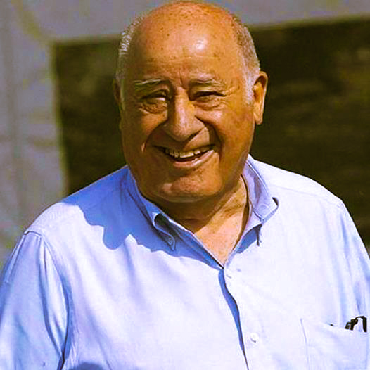

Story of Este hombre
Reportedly, Zara needs just one week to develop a new product and get it to stores, compared to the six-month industry average, and makes roughly 40,000 designs of which around 12,000 new designs are carefully selected and produced each year.[44] Zara has a policy of zero advertising;[8] the company preferred to invest a percentage of revenues in opening new stores instead.[45] Zara set up its own factory in La Coruña (a city known for its textile industry) in 1980 and upgraded to reverse milk-run-type production and distribution facilities in 1990. This approach, designed by Toyota Motor Corp., was called the just-in-time (JIT) system. It enabled the company to establish a business model that allows self-containment throughout the stages of materials, manufacture, product completion, and distribution to stores worldwide within just a few days.[46] Most of the products Zara sells are manufactured in proximity countries like Spain, Portugal, Turkey and Morocco.[8][47] While some competitors outsource all production to Asia, Zara manufactures its most fashionable items – half of all its merchandise – at a dozen company-owned factories in Spain and Portugal and Turkey, particularly in Galicia and northern Portugal and Turkey. Clothes with a longer shelf life, such as basic T-shirts, are outsourced to low-cost suppliers, mainly in Asia.[48] The company can design a new product and have finished goods in its stores in four to five weeks; it can modify existing items in as little as two weeks. Shortening the product life cycle means greater success in meeting consumer preferences.[49] If a design does not sell well within a week, it is withdrawn from shops, further orders are cancelled and a new design is pursued. Zara monitors customers' fashion changes.[50] Zara has a range of basic designs that are carried over from year to year, but some fashion-forward designs can stay on the shelves less than four weeks, which encourages Zara fans to make repeat visits. An average high-street store in Spain expects customers to visit three times a year. That goes up to 17 times for Zara.[51]
In 1985, Amancio Ortega set up a parent company for Zara before going for the global expansion, and in 1988, the company started its international expansion through Porto, Portugal.[10] In 1989, it entered the United States, and then France in 1990.[11] During the 1990s, Zara expanded to Mexico (1992),[12] Greece, Belgium and Sweden (1993). In the early 2000s, Zara opened its first stores in Brazil (2000), Japan and Singapore (2002), Russia and Malaysia (2003),[13][14][15] China,[16] Morocco,[17] Estonia,[18] Hungary[19] and Romania (2004),[20] the Philippines,[14] Costa Rica[21] and Indonesia (2005),[22] South Korea (2008),[23] India (2010),[24] Taiwan and South Africa and Australia (2011).[25][26]
“Many leaders and so many bosses think they have to look as if they are in charge”